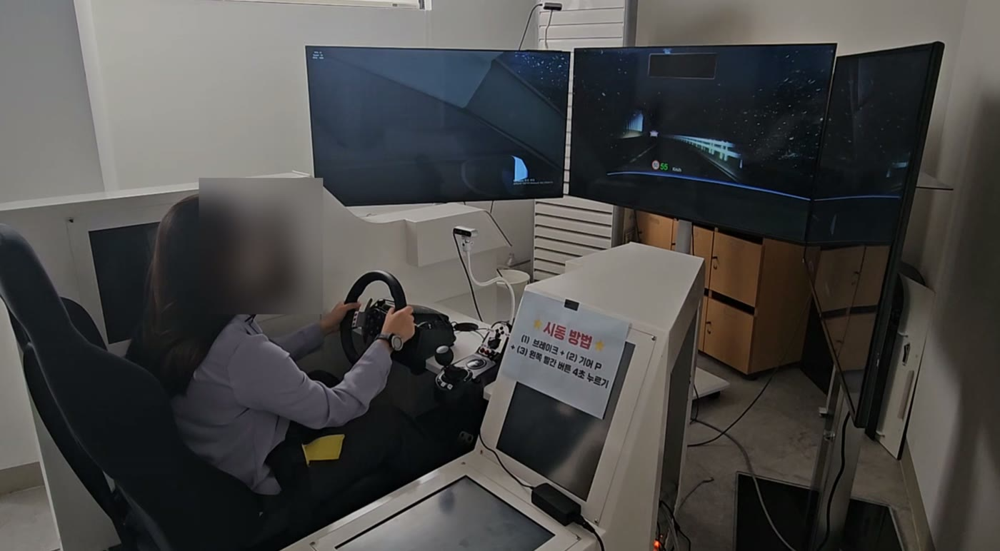

Junyoung Ahn 안준영
Multimodal affective AI — end-to-end, from dataset construction to production-vehicle deployment

통계학(동국대) 출신 AI Researcher — 세종대 HEART Lab
산업부 차량 감성 AI R&D — 데이터 파이프라인부터 실차 실증까지 풀스택 오너십
그 결과가 현대차그룹 산학협동연구 · ST1 양산차 실증으로 연결
석사 재학 중 SCIE 1저자 · 특허 4건
Velocity — AI 전환 24개월의 궤적
통계에서 코드로 전환
수료 직후 0개월
(누적 4건)
공동연구 제안 유치
1저자
연구계약 체결
중간보고 완료
Selected Work

 JETSON · ON-DEVICE
JETSON · ON-DEVICE
차량 운전자 감정·상태 실시간 인식 — 온디바이스 (K-MER)
표정 · 음성 · 생체 융합, 감정 6종 + 상태 4종 추정
수집부터 HMI까지 Jetson 단독 — 클라우드 제로
sLLM 판단 레이어 탑재, Agentic DMS로 확장 중


120명 주행 시뮬레이터 멀티모달 데이터셋 구축 — (sensing-collector)
표정 · 음성 · 생체 · 운전행동 — 동기 수집 인프라
RealSense · 워치 · 마이크 — Jetson 타임싱크
RTC 붕괴 복원 — 엔디언 버그 · 186세션 복구
SDK 결함 디스어셈블 직접 패치 — 무유실 V3 전환
이벤트 로그 1,732건 · 21시 NAS 백업 — 무인 운영
원격 구축, 연세대 팀 직접 운용 — 피험자 120명
운전자 감정 케어 · 안전운전 연계 실차 실증 — Affective Care Drive
국가 R&D 사업화 트랙 — ST1 양산차 · 남양 실증
Frustration 허브 감정체계 — 복합감정 전이 모델링
6모달 Driver Risk Index · HMI 3단계 개입
Jetson AGX Thor · 40,000건 목표 · 중간보고 완료
AI 상권분석 기반 폐점공간 매칭 · 3D 팝업 설계 — (RISE)
한 줄 입력, 상권 분석부터 3D 체험까지 자동
28분기 · 79,322행 상권 데이터 갭 분석 · LLM 컨셉 설계
Neural-Symbolic 점수 체인 폐점 매칭 · WebGL 3D 부스 생성
Gemini 폴백 + Qwen2.5-7B Self-Hosted — 가동률 100%
서울 1,649개 전 상권 이식 가능
발달장애인 AI 일정 도우미 앱 — (HaruMate)
서울청년기획봉사단 기획 · 팀장 — AI 요리교실 온쿡 운영
현장 실수요 발견 — 발달장애인 일정 앱 Flutter 1인 출시
연세대 사회복지대학원 초청 강연 — 연구실 의뢰 웹 개발
만족도 4.83/5 · 헬로TV 뉴스 보도 · SNS 16,000+
Research
멀티모달 감정인식 — 생체·음성·표정 융합 (S-PACE)
행동 · 생리 신호의 시간차, cross-modal alignment로 정렬
quality-aware gating으로 모달 신뢰도 동적 조절
여기서 발견한 라벨 collapse, 인과 융합 연구 CBBF로 확장
인과 생체-행동 융합 감정인식 — (CBBF)
생리가 표정에 선행한다 — 인과를 존중하는 cross-attention
자율신경 0.5~2초 · 표정 1~3초 · 음성 2~5초, 시간차 인과 체인 모델링
Bio-anchored conditioning + FiLM — S-PACE 라벨 collapse 발견의 후속
원고 완성 단계 — KBS 투고 예정
자율 연구 자동화 하네스 — LLM 워커 (claude-research-engine)
LLM을 오케스트레이터가 아닌 워커로 두는 자율연구 하네스
연구 프로토콜을 프롬프트가 아닌 코드 레벨에서 강제 — frozen schema · 해시체인 로그 · hook 게이트
가설 사전등록부터 통계 검정, 적대적 자기검증까지 단일 파이프라인
HT-DAR · CBBF 실험 운용에 실사용 중
생체신호 기반 운전 상황 인식 — Bio-Aware Slot Attention
생체신호가 외부 시각 인식을 직접 변조하는 인식기
YOLO · 차선 · 생체 · 조도 토큰, 10프레임 Slot Attention 바인딩
Bio-Aware Gating — 스트레스 상승 시 보행자 · 끼어들기 검출 민감도 강화
심박이 차의 눈을 돕는다 — 5 이벤트 + 3 상태 동시 추정
한국인 표정 기반 감정인식 (FER) — (AU-RegionFormer)
AI와 인간의 감정 지각 괴리 정량화 FER
YOLO 검출 · MediaPipe 10영역 패치 · AU 트랜스포머
연세대 298명 human study — 전문가 · 일반인 · 연령 · 피로 효과 분석
AffectNet · CK+ · SFEW · AFEW 교차문화 일반화 검증
Live Demos
말이 아니라 실구동 — 수집 환경부터 실차 검증까지 전 구간 시연 영상
Project Ecosystem
석사 재학 중 20+ 저장소 — 차량 엣지 AI · 감정인식 연구 · 출시 제품 세 갈래
K-MER lineage
K-MER — 온디바이스 운전자 감정·상태 인식
K-MER Tesla — 2-Tier LLM 판단 · 오프라인 동작
Temporal Slot Query — Bio-Aware 외부상황 인식
sensing-collector — 수집 파이프라인
S-PACE & beyond
S-PACE (SGMT) — SCIE 게재 · 연구 라인의 뿌리
CBBF — Causal Fusion · KBS 타겟
HT-DAR — Dynamic Anchor Routing
AU-RegionFormer — 한국형 FER · Q1 타겟
Shipped & built
RISE 폐점공간 재생 — Neural-Symbolic · 단독
HaruMate — 발달장애인 일정 앱 · 출시
OnCook — AI 요리 챗봇 · 봉사 팀장
POPR — Spatial AI 엔진
research-engine — 자율연구 하네스
Publications

HT-DAR — Dynamic Anchor Routing 융합 · CMU-MOSEI · IEMOCAP · K-EmoCon 평가
CBBF — Causal Bio-Behavioral Fusion · 생리가 표정에 선행한다는 인과 · KBS 투고 예정
전 실험, 자체 제작 claude-research-engine으로 오케스트레이션
Patents · 4 filed
| Title | Application No. |
|---|---|
| 멀티모달 감정 인식 및 감정 표현 생성 방법 및 그 장치 | 10-2025-0055652 |
| 멀티모달 인공지능 기반 운전자 감정 인식 시스템 | 10-2026-0020705 |
| 식물 바이오 신호를 이용한 감정 인식 시스템 | 10-2025-0174160 |
| 한국인 표정 특성을 반영한 FACS 기반 감정 인식 방법 및 시스템 | 10-2025-0070458 |
Experience & Education
Beyond Research
Team Lead — AI Cooking Assistant (온쿡)
서울시자원봉사센터 AI 요리교실 팀 리드
발달장애인 대상 AAC 기반 AI 셰프 챗봇 개발 · 운영
만족도 4.83/5 · 참여 10명 · 헬로TV 뉴스 보도 · SNS 16,000+ · LG HelloVision 협력
이 현장 경험이 HaruMate의 출발점
Yonsei University — 초청 강연 & 연구 협업
연세대 사회복지대학원 초청 강연 2025.12 — 온쿡 · AI 접근성 사례
강연 후 해당 연구실이 먼저 공동연구 제안
학계 외부에서 먼저 찾은 연구자
Spatial AI — POPR
상권 · 공간 데이터 기반 팝업 스토어 자동 설계 엔진
기획 · 아키텍처 · 개발 100% 단독 소유 — 연구 외 시간 독립 개발